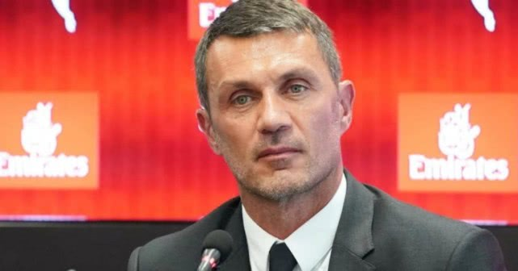
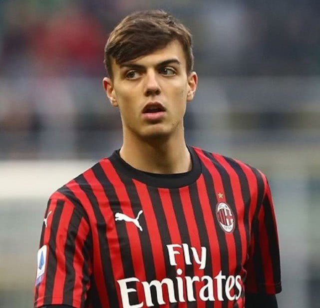
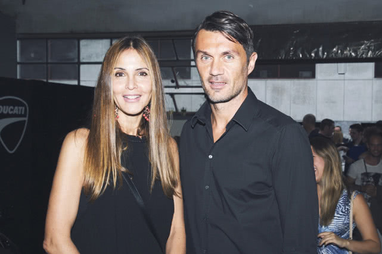

欧美一线医护人员：“哪怕一个口罩都能帮到我们”，“所有ICU床位都给了新冠病人”
原文链接 备份链接 记者/颜星悦 实习记者/龙天音 编辑/计巍 宋建华 自疫情爆发以来，法国已有一千余人死亡（图/路透社） 截至3月26日，全球共有新冠确诊病例46万余例，死亡病例数超过21000例。意大利仍是中国以外累计确诊病例数最多的 …
意大利足坛名宿保罗·马尔蒂尼（现年51岁）自述感染新冠病毒的感受和症状：身体剧痛，胸闷，干咳，失去味觉和嗅觉，但已在好转。

马尔蒂尼足球世家：保罗（右上）、保罗已故的父亲切萨雷（左上）以及保罗的两个儿子
自从3天前（3月22日）通过AC米兰官方网站宣布自己与次子确诊感染新冠病毒之后，保罗·马尔蒂尼收到了来自世界各地球迷的问候和关心，尤其是来自中国的球迷，马尔蒂尼还特地拍摄了一段视频感谢中国球迷对他和意大利人的关心。昨日（3月24日），他通过《晚邮报》详细向球迷和读者讲述了自己现在的身体状况。

现年51岁的保罗·马尔蒂尼任AC米兰技术总监
他说，“现在我感觉还不错，最糟的状况已经结束了，现在还有点干咳。我失去了味觉和嗅觉，希望它们能回来。这就像一次比普通流感更糟糕的生病。我了解自己的身体。一个运动员很了解自己。这一次身体的疼痛感格外强烈，此外我还曾感到胸口发紧发闷。这是一种新的病毒。我的身体在与一个未知的敌人对抗。“
与他一起确诊的还有18岁的次子、AC米兰球员达尼艾莱·马尔蒂尼。他们究竟是被谁传染的？保罗回答，”我不知道。我太太曾有过一段很长的感冒，很奇怪的感冒，她在床上躺了3个星期。那大概是2月中旬（笔者注：意大利本土疫情正式宣布爆发是2月20日1号病人马提亚确诊）。我们的长子、23岁的克里斯蒂安和我们住一起，他也感冒了，很严重的那种，全家人当中他的感冒症状最重。我是3月5日开始感觉到关节和肌肉的疼痛，体温最高时是38.5度。次日我本来是要去米兰内洛（AC米兰训练基地，因保罗现任红黑俱乐部技术总监）的，但我留在了家里。我连AC米兰对热那亚的联赛都没去现场看。“

年轻时的保罗和妻子阿德丽亚娜
”我服用过退烧药，“马尔蒂尼接着说，”我从未服用过抗病毒的药物，因为我没有出现过呼吸困难。我已经14天没有见过AC米兰队员了。他们当中没有任何人采检是阳性。“当然，除了他的次子达尼埃莱。
马尔蒂尼为什么没有一出现症状就去采检？ 他的回答是，”因为一开始不太可能采检，我的症状虽然强烈，但也很可能只是季节性流感。后来我得知，2月23日与我见过面的一位朋友确诊了，在我身边一起工作的另一个人也确诊了。我们并不清楚究竟是谁传给谁的。“

18岁的次子达尼艾莱，效力AC米兰足球俱乐部
现在对马尔蒂尼提供治疗意见的是AC米兰的队医。”我们俱乐部一直非常注重每个成员的健康，我们拥有一些不错的资源，长期和米兰的圣拉斐尔大学医院合作。但我们决定严格遵守米兰城和伦巴第大区的新冠病毒医疗流程行事。我是如何采检的？卫生部门的医生带着手套和口罩到我家中来取样的。那是上个星期二（笔者注：3月17日）。2天后检测结果出来了：阳性。“

马尔蒂尼与妻子阿德丽亚娜
当被问及是否感到过害怕，保罗说，”其实在采检结果出来之前我就猜到自己可能感染了新冠病毒，因为我之前已经打过流感疫苗了。害怕？当然，有一定的担忧是肯定的。我的一个朋友确诊之后住在莱尼亚诺（伦巴第某小城）医院，他呼吸困难，晚上睡不着，很难受。但我的情况要好很多。不管怎样，我和家人一起在家隔离已经18天了。”
关于同样确诊的18岁次子达尼艾莱，马尔蒂尼说，”他和我们住在一起，也发热，感到身体疼痛。但他这么年轻，他是我们全家症状最轻的一个。我太太和长子的采检结果是阴性，但我们很肯定，他们俩已经感染过并且好了。一家人在一起生活，要采取完全的隔离是很困难的。我们曾试图保持距离。每个人睡自己的房间。但是午餐和晚餐我们都一起吃。之前我们每个人都急匆匆地，急着去上班，有的急着去训练。这次生病倒是让我们一家团结得更紧了。“
幸好，保罗的症状正在好转。祝愿他和小儿子也能尽快彻底痊愈。
免责声明
本文来自腾讯新闻客户端自媒体，不代表腾讯新闻的观点和立场。
原文链接 备份链接 记者/颜星悦 实习记者/龙天音 编辑/计巍 宋建华 自疫情爆发以来，法国已有一千余人死亡（图/路透社） 截至3月26日，全球共有新冠确诊病例46万余例，死亡病例数超过21000例。意大利仍是中国以外累计确诊病例数最多的 …
原文链接 备份链接 体坛周报全媒体驻伦敦记者 刘川 查尔斯王子确诊感染新冠病毒！这是3月25日英国的头条新闻。除此之外，以BBC为首的英国当地媒体也终于开始报道普通民众感染的一些细节。 从上周五开始正式关闭学校，呼吁人们尽可能呆在家中算 …
原文链接 备份链接 《快报周刊》（L’ Espresso）拥有65年历史，主要围绕政治、文化、经济的重要话题展开深度分析和探讨，是一本非常有影响力的杂志。从2016年起《快报周刊》每周日与《共和报》当天的日报一起出售。 这篇文 …
原文链接 备份链接 2月27日，罗斯福号航母在太平洋执行任务。来源：美国海军 记者 | 刘芳 “ “如果我会被感染的话，就说明任何人都有可能会被感染。” ” 新冠病毒在美国的扩散速度超过了很多公共卫生专家的预期。世卫组织3月24日警告，美 …
原文链接 备份链接 澎湃新闻记者 张无为 近日，中国留英学生吴芃因每天坚持在推特上发布英国的疫情数据增长图表，获得众多英国民众的称赞。 视频编辑 吴佳颖 责任编辑：储静伟 3月24日，英国《约克郡邮报》（Yorkshire Post）对在 …